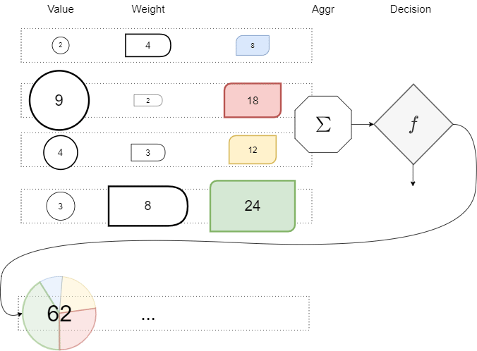
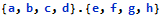
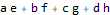
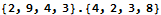
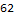

A node receives a linear combination of values, transforms in into a single value, and then decides whether to send its value forward.





Because the operation is multiplication, and the aggregation is a sum, Value and Operation can be expressed as vectors because the compound operation Multiplication + Sum is then vector multiplication. (Or is it the other way around with Vector being an initial choice and the operation choice based on this?)
Each step or layer is composed of the same number of nodes. Nodes have no identity except for their number, which is constant through propagation.
Each destination node in a step gets the values by the above operation from the same source nodes in the previous step. What changes in the propagation between destination nodes (which prevent a reduction to a single destination node) is the weight set applied.
For each source node, there is a weight set. Each source node operated using its weight set produces one destination node, so the number of nodes keeps unchanged.
Each weight set is a relation from a node to all nodes, including itself. Since there are no nodes without a weight set, the set of weight sets is the set of all relations between each node. This is the cartesian product of the vectors taken as sets.